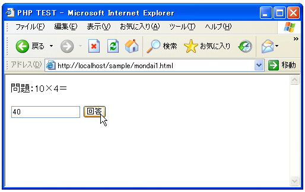

- Home ›
- PHP入門 ›
- PHPサンプルプログラム ›
- フォームの処理
GETで送られたデータ処理
まずはフォームからGETを使って送られてきたデータの処理を行ってみます。
下記のようなテキストボックスだけがあるフォームを考えて見ます。
<form method="GET" action="./kaitou.php"> <input type="text" name="text1"> <input type="submit" name="btn1" value="回答"> </form>
上記のようなフォームが含まれるHTMLからフォーム上のボタンをクリックすると、「action」で指定されたPHPは含まれるHTMLファイルにフォームのデータが渡されてきます。上記の場合には「text1=(テキストボックスに入力した値」と「btn1=回答」と言う2つの値が送られ来ますが、これらの値は下記のように取り出すことが出来ます。
変数 = $_GET['フォームの部品に付けた名前'];
先ほどの例で言えば下記のように取り出すことが出来ます。
$input_string = $_GET['text1']; $btn_action = $_GET['btn1'];
このようにフォームからのデータを受け取り側のPHPプログラムで取り出すことが出来ます。
下記では、2つのHTMLファイルを用意し、1つのHTMLファイルには問題と、それに対する回答を記述するためのフォームを用意し、2つめにはフォームからのデータを処理するためのPHPプログラムを記述して、実際にフォームからのデータが取り出せるかどうかを試してみます。
<html> <head><title>PHP TEST</title></head> <body> <p> 問題：10×4＝ </p> <form method="GET" action="./kaitou1.php"> <input type="text" name="text1"> <input type="submit" name="btn1" value="回答"> </form> </body> </html>
<html>
<head><title>PHP TEST</title></head>
<body>
<?php
$input_data = $_GET['text1'];
print('入力した値は'.$input_data.'<br>');
print('帰ってきた値の型は'.gettype($input_data));
?>
</body>
</html>
上記の2つのファイルは同じディレクトリに設置してある前提で記述してあります。
まず「mondai1.html」をブラウザ経由で見てください。
テキストボックスに値を入力してボタンをクリックして下さい。

するとフォームの「action」に指定してある「kaitou1.php」にフォームのデータが送られ、その中に記述してあるPHPプログラムによってフォームからのデータが取得され画面に表示されます。
ちなみにフォームからのデータを取得した場合、文字列型の値として取得が行われるようです。
( Written by Tatsuo Ikura )

著者 / TATSUO IKURA
初心者～中級者の方を対象としたプログラミング方法や開発環境の構築の解説を行うサイトの運営を行っています。